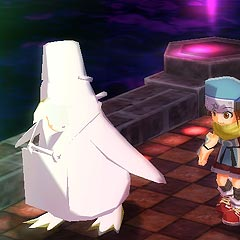
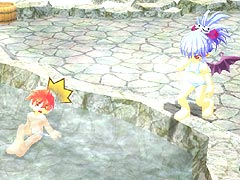

とはいえ、ダメージを受けている間に掴まなければ意味がないので、実用性は高くないのですが。

(いわつつき)
目次 > ゲームについて > 日本Falcom 攻略 > ZWEI II > 情報
らんの眼
ZWEI II (ツヴァイ 2、ZWEI II Plus)
| 概要 | 情報 | 攻略チャート |
| フード交換 | ペットについて | ボス戦 |
| 敵キャラ一覧 | ハンターランク | G-コロッセオ |
| アイテム一覧 | ガジェット一覧 | トレジャー一覧 |
| ダンジョン一覧 | クリアデータ特典 | Plusの追加要素 |
| ZWEI II攻略へ | 目次へ戻る |
| [ 1 ] [ 2 ] [ 3 ] [ 4 ] [ 5 ] [ 6 ] [ 7 ] |
| ふぁるこむっ! |
| ZWEI II を起動してすぐにFalcom のロゴと「ファルコム」という音声が流れますが、この声が毎回ランダムで変わります。 ゲームの主要キャラの声分のバージョンがあるのだと思いますが、何度も起動するのが面倒くさいので確かめていません。 |
| クリアするまでは我慢です |
| ZWEI II をインストールしたフォルダから「DATA\sys」と移動するといくつかMPEG ファイル(動画)を見つけることができます。この中の「op.mpg」と「ed.mpg」はそれぞれオープニングとエンディングのムービーです。 エンディングのムービーの中身はただのスタッフロールですが、若干ゲーム内の映像が混じっているので、ネタバレを嫌うのならばクリアするまで再生しない方がいいでしょう。 |
| BGM を聞く |
| ZWEI II をインストールしたフォルダにある「bgm」というフォルダを開くと大量のOGG ファイルがあります。 中身はゲーム中で使用されるBGM などで、Winamp やFoobar2000、Lilith といったプレイヤーで再生でき、このデータだけでもサウンドトラックになります。 |
| 白い物体が出てきたら |
| 下の画像のように、ゲーム中に真っ白のキャラクターや敵、物が出てくることがあります。これはただのバグで、パッチをあてるとほぼ解消されます。 応急処置としてはゲームを再起動すればいいのですが、頻発するようならばグラフィックの設定を今のものよりも低くするといいかもしれません。  |
| 混浴イベント |
| 「星降りの里」にある露天風呂にラグナで入ると、ごくまれに混浴のイベントが発生します。発生する条件はよく分かりません。  |
| フックギアで即死攻撃 |
| ラグナがダメージを受けている最中に、ラグナへダメージを与えている敵をフックギアで掴むと、その敵が死にます。「いわつつき」や「しびれまんた」などの、突進系の攻撃をしてくる敵に対しては比較的出しやすいです。 とはいえ、ダメージを受けている間に掴まなければ意味がないので、実用性は高くないのですが。 (いわつつき) |
| [ 1 ] [ 2 ] [ 3 ] [ 4 ] [ 5 ] [ 6 ] [ 7 ] |
| 概要 | 情報 | 攻略チャート |
| フード交換 | ペットについて | ボス戦 |
| 敵キャラ一覧 | ハンターランク | G-コロッセオ |
| アイテム一覧 | ガジェット一覧 | トレジャー一覧 |
| ダンジョン一覧 | クリアデータ特典 | Plusの追加要素 |
| ページの上部へ | ZWEI II 攻略へ | 目次へ戻る |